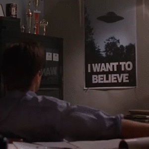

We have entered a new era. AI-generated images have become almost photo realistic... Will we no longer be able to tell what's real vs what's fake?
As digital technology continues to shape society, deepfakes is causing increasing concern about the authenticity of what we see and hear.
One of the most significant challenges of the digitalization of society is the problem of what's real. It has become increasingly difficult to know whether the media we consume is authentic or manipulated.
Deepfakes are computer-generated media that use artificial intelligence to manipulate images, videos, audio and text to create content that is almost indistinguishable from the real thing.
Deepfakes can make people appear to do or say things they never did, this can have serious consequences for democracy. This can be used to spread false information or propaganda, manipulate public opinion, and even sway elections. With this technique, it becomes easier to create convincing and believable content that can be difficult to distinguish from reality.
This poses a serious threat to the integrity of information and the ability to make informed decisions and can lead to distrust of legitimate sources of information, confusion among voters, and erosion of democratic processes.
The potential damage deepfakes can cause to democracy highlights the need for efforts to develop effective tools to detect and mitigate the spread of this type of disinformation. It also emphasizes the importance of educating people about how to critically evaluate the authenticity and credibility of media they consume to help safeguard democratic values.
”I’m an optimist. I believe that statements like “Bush went AWOL” or “Gore claims to have invented the Internet” can be evaluated and decided pretty much true or false. (the conclusion can be a little more nuanced, but the important thing is that there’s a definitive conclusion.) And even crazier, I believe that if there was a fair and accurate system for determining which of these things were lies, people would stop repeating the lies. I would certainly try to. No matter how much I wanted to believe “Dean’s state record sealing was normal” or “global warming does exist”, if a fair system had decided against it, I would stop.
Up With Facts: Finding the Truth in WikiCourt - Aaron Swartz, 2004.
Many of the most convincing deepfake examples have been created with the help of impersonators that mimick the source’s voice and gestures, just like this video produced by BuzzFeed and comedian Jordan Peele using After Effects CC and FakeApp. Peele’s mouth was pasted over Obama’s, replacing the former president’s jawline with one that followed Peele’s mouth movements. FakeApp was then used to refine the footage through more than 50 hours of automatic processing.
Images purporting to show Trump getting arrested have gone viral on social media platforms like Twitter. But Trump hasn't been taken into custody—at least not yet...(2023-03-23). All the images was AI-generated.
Puffer coat pope is fake, but the AI art’s impact is real
Pope Francis, but make it fashion. A person playing around with Midjourney, the AI art program, went viral over the weekend for creating an image of the pope wearing a coat that could have been pulled off a Balenciaga runway. The image went viral, not because it was so unrealistically absurd, but because it was believable.
A non-digital solution is education from an early age in school - Fact-Checking; Question the content: Could that be true? And when you are not 100 percent sure, do not share, but search for other media reports about it to double-check. Who has published the content and why?
This already exists, but I think it is important to inform about this more than we already do.
An app, where you upload content you want to check the probability of reality and if the content has been modified. This app would provide users with a valuable tool for verifying the credibility of online content, helping to promote informed decision-making and combat misinformation.
This will be a two-step check
Step one: Text, content and context.
The user would insert the URL or text of the content they want to check into the app.
Step two: Image, video and audio.
The user would upload the content they want to check into the app.
Based on the results of the search and credibility check, the app would provide an assessment of the credibility of the content. This would be i a rating indicating the level of trustworthiness of the content, as well as a summary of the sources that have published it and their credibility.
Introducing Is It Real? - the ultimate reality checker. With just a few taps, you can upload content and get an accurate assessment of its reality, our advanced technology will analyze and determine the probability of it being real or fake.
Don't be fooled by doctored photos or manipulated videos - know the truth with Is It Real? Our app will also check for any modifications made to the content, so you can have peace of mind knowing that what you see is truly what you see.
Get started today and experience the power of reality checking at your fingertips. Download Is It Real? now and never be misled by fake content again.
A copy written by ChatGPT
Is always hard to reach out with a new app. As a start and beginning I'm thinking of a collaboration with MSB (Myndigheten för samhällsskydd och beredskap) and Internetstiftelsen. Where they use their channels to inform about the app and how to use it. And hopefully it generate some media coverage about the app
Application task for Hyper Island. Niklas Wallenborg - 2023